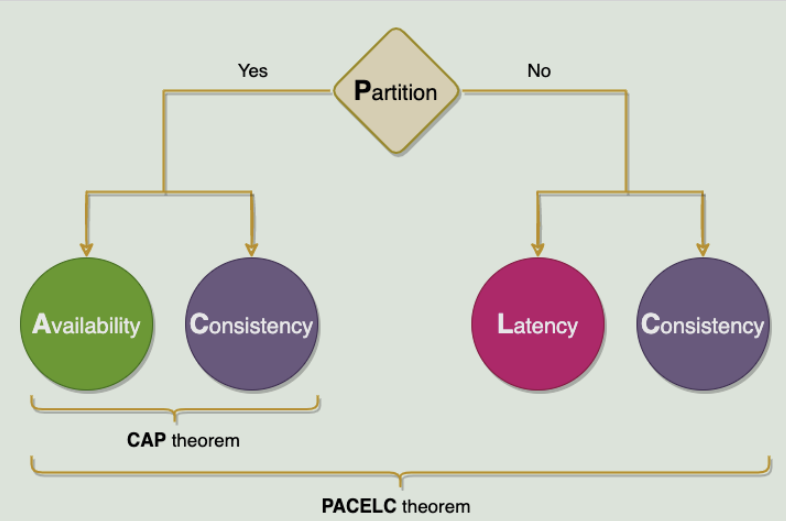

目录 [−]
原文:Distributed System Design Patterns
布隆过滤器
Bloom 过滤器是一种节省空间的概率数据结构，用于测试元素是否为某集合的成员。它用于我们只需要检查元素是否属于对象的场景。
在BigTable（和Cassandra）中，任何读取操作都必须从组成Tablet的SSTable中读取。如果这些 SSTable 不在内存中，则读取操作可能最终会执行许多磁盘访问以便读取所需的SSTable。为了减少磁盘访问次数，BigTable 使用 Bloom 过滤器。
一致性哈希
一致的哈希允许您轻松扩展，从而允许以有效的方式复制数据，从而实现更好的可用性和容错能力。
通过对数据项的键进行哈希处理以产生其在环上的位置，然后顺时针遍历环以查找位置大于该项位置的第一个节点，将每个由键标识的数据项分配给节点。与节点关联的节点是数据项的位置。
一致散列的主要优点是增量稳定性;节点离开或到达集群仅影响其直接邻居，其他节点不受影响。
Quorum
在分布式环境中，quorum是在确认操作成功之前需要成功执行此分布式操作的最小服务器数。
Cassandra，为了确保数据一致性，每个写入请求都可以配置为仅当数据已写入至少一个quorum（或大多数）副本节点时才成功。
对于领导者选举，Chubby使用Paxos，它使用quorum来确保强大的一致性。
Dynamo 将写入复制到系统中其他节点的草率quorum，而不是像 Paxos 那样的严格多数quorum。所有读/写操作都在首选项列表中的第一个 NN 正常节点上执行，该节点可能并不总是在遍历一致哈希环时遇到的第一个 NN 节点。
领导者(Leader)和追随者(Follower)
为了在管理数据的系统中实现容错，需要在多个服务器上复制数据。
在集群中选择一个服务器作为领导者。领导者负责代表整个集群做出决策，并将决策传播到所有其他服务器。
三到五个节点的集群，就像在实现共识的系统中一样，领导者选举可以在数据集群本身内实施，而不依赖于任何外部系统。领导者选举在服务器启动时进行。每个服务器在启动时都会启动领导者选举，并尝试选举领导者。除非选出领导者，否则系统不接受任何客户端请求。
心跳
心跳机制用于检测现有领导者是否失败，以便可以启动新的领导者选举。
Fencing
在领导者-追随者模式中，当领导者失败时，不可能确定领导者已停止工作。例如，慢速网络或网络分区可能会触发新的领导者选举，即使前一个领导者仍在运行并认为它仍然是活动的领导者。
屏蔽是指在以前处于活动状态的领导者周围设置围栏，使其无法访问集群资源，从而停止为任何读/写请求提供服务。
使用以下两种技术：
- 资源屏蔽：系统会阻止以前处于活动状态的领导者访问执行基本任务所需的资源。
- 节点屏蔽：系统会阻止以前处于活动状态的领导者访问所有资源。执行此操作的常见方法是关闭节点电源或重置节点。
WAL (预写日志 Write-ahead Log)
预写日志记录是解决操作系统中文件系统不一致的问题的高级解决方案。受数据库管理系统的启发，此方法首先将要执行的操作的摘要记入“日志”中，然后再将其实际写入磁盘。在发生崩溃的情况下，操作系统只需检查此日志并从中断的位置继续。
分段日志
将日志拆分为多个较小的文件，而不是单个大文件，以便于操作。
单个日志文件在启动时读取时可能会增长并成为性能瓶颈。较旧的日志会定期清理，并且很难对单个大文件执行清理操作。
单个日志拆分为多个段。日志文件在指定的大小限制后滚动。使用日志分段，需要有一种将逻辑日志偏移量（或日志序列号）映射到日志段文件的简单方法。
高水位线 (High-Water mark)
跟踪领导者上的最后一个日志条目，该条目已成功复制到追随者的quorum。日志中此条目的索引称为高水位线索引。领导者仅公开到高水位线索引的数据。
Kafka：为了处理非可重复读取并确保数据一致性，Kafka broker会跟踪高水位线，这是特定分区的最大偏移量。使用者只能看到高水位线之前的消息。
租约(Lease)
租约就像一个锁，但即使客户端离开，它也能工作。客户端请求有限期限的租约，之后租约到期。如果客户端想要延长租约，它可以在租约到期之前续订租约。
Chubby 客户端与领导者保持有时限的会话租约。在此时间间隔内，领导者保证不会单方面终止会话。
Gossip 协议
Gossip协议是点对点通信机制，其中节点定期交换有关自己和他们所知道的其他节点的状态信息。
每个节点每秒启动一轮Gossip回合，以与另一个随机节点交换有关自己和其他节点的状态信息。
Phi 累计故障检测（Phi Accrual Failure Detection）
此算法使用历史检测信号信息使阈值自适应。通用的应计故障检测器不会判断服务器是否处于活动状态，而是输出有关服务器的可疑级别。
Cassandra 使用 Phi 应计故障检测器算法来确定群集中节点的状态。
脑裂
分布式系统具有两个或多个活动领导者的场景称为脑裂。
通过使用生成时钟(Generation Clock)可以解决脑裂问题，生成时钟只是一个单调递增的数字，用于指示服务器的生成。
每次选出新领导者时，时钟数字(generation number)都会增加。这意味着，如果旧领导者的时钟数为“1”，则新领导人的时钟数将为“2”。此时钟号包含在从领导发送到其他节点的每个请求中。通过这种方式，节点现在可以通过简单地信任具有最高数字的领导者来轻松区分真正的领导者。
Kafka：为了处理脑裂（我们可以有多个active controller broker），Kafka使用“纪元数”（Epoch number），这只是一个单调增加的数字来表示服务器的代次(generation)。
HDFS：ZooKeeper用于确保任何时候只有一个NameNode处于活动状态。epoch 编号作为每个事务 ID 的一部分进行维护，以反映 NameNode 的代次。
校验和 (checksum)
在分布式系统中，在组件之间移动数据时，从节点获取的数据可能会损坏。
计算校验和并将其与数据一起存储。
要计算校验和，请使用 MD5、SHA-1、SHA-256 或 SHA-512 等加密哈希函数。哈希函数获取输入数据并生成固定长度的字符串（包含字母和数字）;此字符串称为校验和。
当系统存储某些数据时，它会计算数据的校验和，并将校验和与数据一起存储。当客户端检索数据时，它会验证从服务器接收的数据是否与存储的校验和匹配。如果没有，则客户端可以选择从另一个副本检索该数据。
HDFS和Chubby将每个文件的校验和与数据一起存储。
CAP定理
CAP定理指出，分布式系统不可能同时提供以下所有三个理想属性：
一致性(C)、可用性(A) 和分区容差(P)。
根据CAP定理，任何分布式系统都需要从三个属性中选择两个。这三个选项是 CA、CP 和 AP。
Dynamo：在CAP定理术语中，Dynamo属于AP系统的类别，旨在牺牲强一致性为代价实现高可用性。
BigTable：就CAP定理而言，BigTable是一个CP系统，即它具有严格一致的读取和写入。
PACELEC 定理
PACELC定理指出，在复制数据的系统中：
- 如果有一个分区（'P'），分布式系统可以在可用性和一致性（即'A'和'C'）之间进行权衡;
- 否则（'E'），当系统在没有分区的情况下正常运行时，系统可以在延迟（'L'）和一致性（'C'）之间进行权衡。

定理（PAC）的第一部分与CAP定理相同，ELC是扩展。整个论点假设我们通过复制来保持高可用性。因此，当失败时，CAP定理占上风。但如果没有，我们仍然必须考虑复制系统的一致性和延迟之间的权衡。
提示交接 (Hinted Handoff)
如果节点关闭，系统会保留它们错过的所有请求的提示（或注释）。故障节点恢复后，将根据存储的提示将请求转发给它们。
当节点关闭时，领导者会在本地磁盘上的文本文件中写入提示。此提示包含数据及其所属的节点信息。当领导者意识到它为其保留提示的节点已恢复时，它会将每个提示的写入请求转发到该节点。
读取时修复
在分布式系统中，数据跨多个节点复制，某些节点最终可能会拥有过时的数据。
在读取操作期间修复过时的数据，因为此时，我们可以从多个节点读取数据以进行比较并找到具有过时数据的节点。此机制称为读取修复。一旦已知具有旧数据的节点，读取修复操作就会将较新版本的数据推送到具有较旧版本的节点。
Cassandra和Dynamo使用“读取修复”将最新版本的数据推送到具有旧版本的节点。
默克尔树 (Merkle Trees)
“读取修复”可在处理读取请求时消除冲突。但是，如果某个副本明显落后于其他副本，则可能需要很长时间才能解决冲突。
副本可以包含大量数据。单纯地拆分整个范围来计算校验和进行比较并不是很可行;有太多的数据需要传输。相反，我们可以使用Merkle树来比较一个范围的副本。
Merkle 树是哈希的二叉树，其中每个内部节点是其两个子节点的哈希，每个叶节点是原始数据一部分的哈希。
比较Merkle树在概念上很简单：
- 比较两个树的根哈希。
- 如果它们相等，请停止。
- 在左边和右边的孩子上递归检查。
为了实现反熵和在后台解决冲突，Dynamo使用Merkle树。